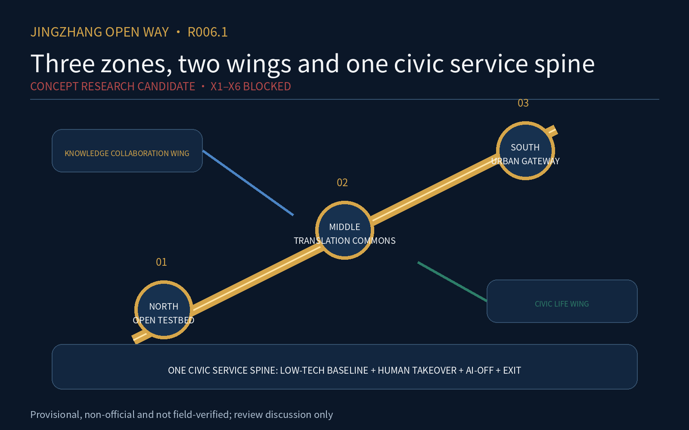
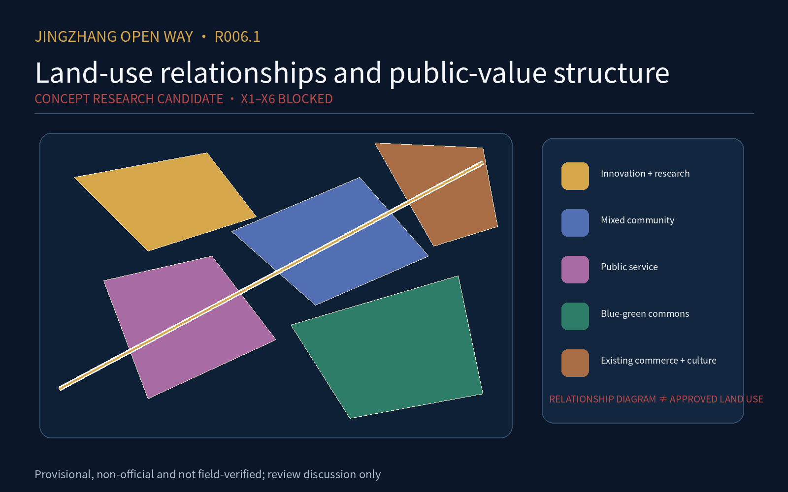
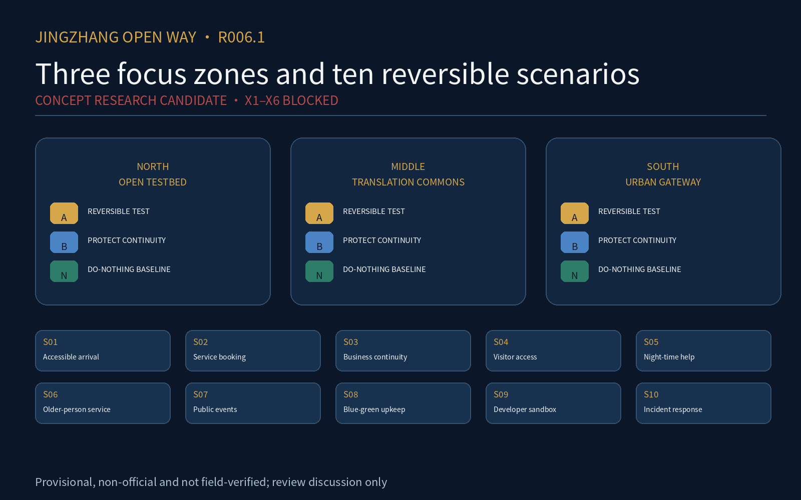
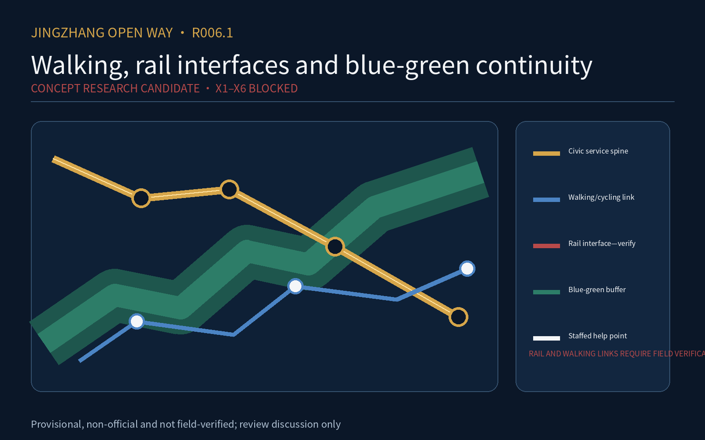

JingZhang Open Way R006.1 — Concept Research Candidate
Five distinct evidence-bounded diagrams. X1-X6 remain blocked.
CONCEPT RESEARCH CANDIDATE · X1–X6 BLOCKED
中文




Provisional, non-official and not field-verified; review discussion only